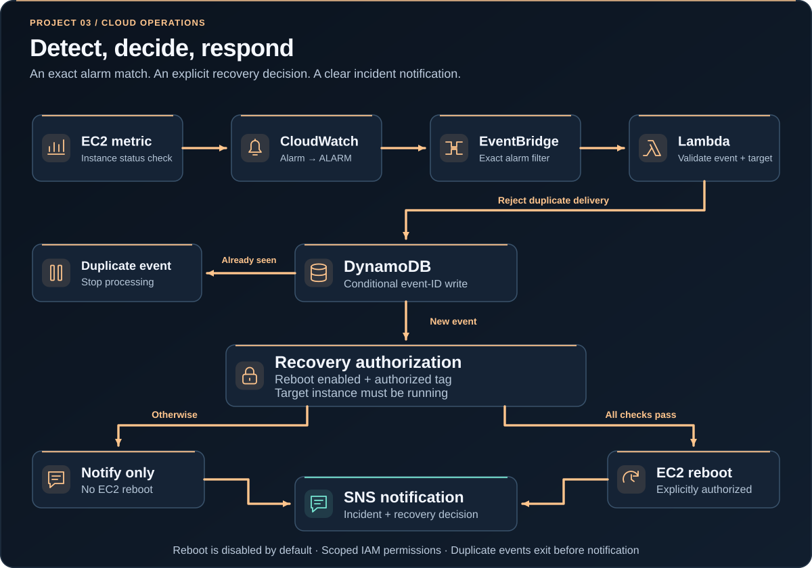

Cloud monitoring & auto-remediation
An event-driven AWS operations workflow that turns an EC2 instance alarm into controlled notification and optional tag-authorized recovery.

SYSTEM ARCHITECTURE · CONCEPTUAL COMPONENT AND TRAFFIC FLOW
The challenge
Observability becomes more useful when a signal can lead to a clear, consistent response. Unfiltered automation, however, can be dangerous: unrelated events might trigger disruptive actions or event delivery might be duplicated.
This architecture separates the incident signal, routing, decision logic and response, with multiple safeguards around instance reboot.
The architecture
An EC2 instance status-check CloudWatch alarm emits a state change when the signal breaches its threshold. EventBridge filters for one specific alarm and the ALARM transition, then invokes a Python Lambda function.
The function validates the event and instance identity. DynamoDB stores an event ID to prevent duplicate processing, and Amazon SNS carries a concise incident notification. A reboot requires an explicit Terraform switch and a matching EC2 authorization tag.
Engineering decisions
- Default safe behavior: notifications are active, while automatic reboot is opt-in.
- Defense in depth: EventBridge filtering is repeated inside Lambda before taking action.
- Idempotent handling: DynamoDB conditional writes stop repeat processing of the same event ID.
- Scoped access: the remediation permission targets one EC2 instance ARN rather than an entire fleet.
How the pieces fit together.
Detect a failure
CloudWatch watches the EC2 instance status-check metric and raises an alarm.
Validate the event
EventBridge invokes Lambda, where identity and alarm state are verified and duplicates rejected.
Notify or remediate
SNS receives an incident message; optional reboot requires both the configuration switch and EC2 tag.
Architecture, expressed in code.
The authorization decision is intentionally readable. Neither a matching alarm nor a permission grant alone is enough to initiate an EC2 reboot.
tags = {t["Key"]: t["Value"] for t in instance.get("Tags", [])}
running = instance.get("State", {}).get("Name") == "running"
opted_in = str(config["REBOOT_ENABLED"]).lower() == "true"
allowed_tag = tags.get("PortfolioRemediation") == "allow"
do_reboot = running and opted_in and allowed_tag
if do_reboot:
ec2.reboot_instances(InstanceIds=[target])Browse lambda/remediate.py for decision logic, main.tf for event wiring and IAM policy, and tests/test_remediate.py for behavior cases.